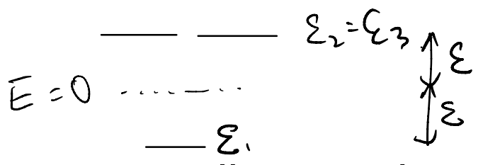
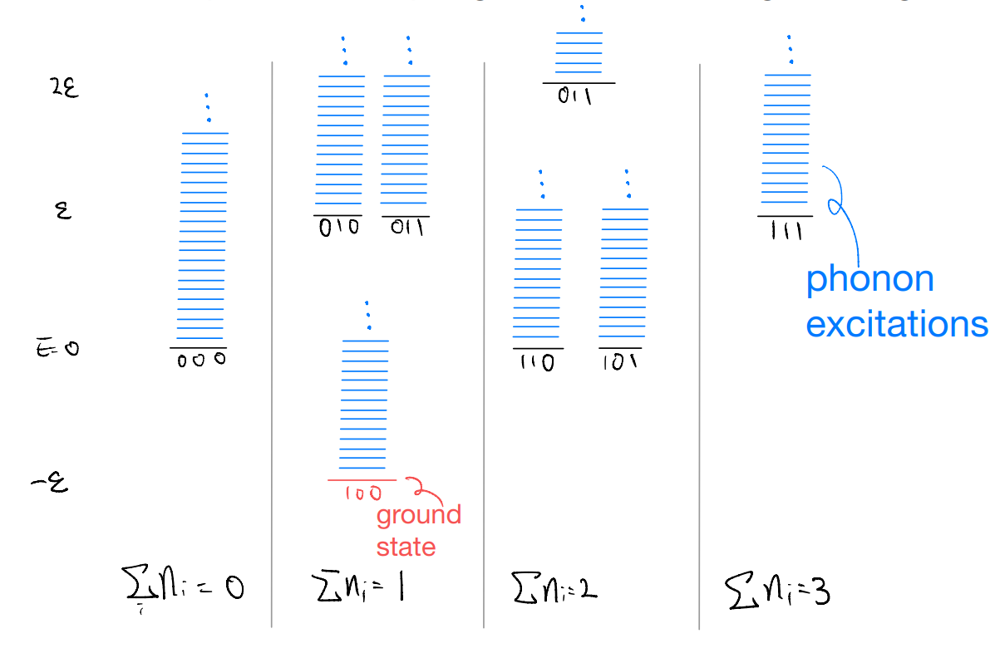
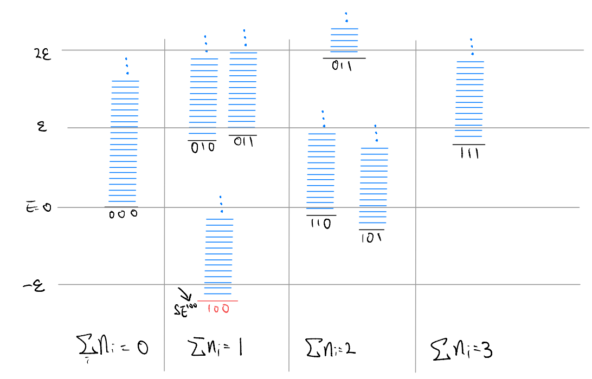

lec06
Contents
lec06¶
20220223
Topics
impurity-phonon coupling
zero-temperature solution
impurity spectral function
Goals
Applying the techniques to a less trivial and physically relevant problem
Appreciating how we could probe phonons with electrons
Last time, we began introducing an impurity-phonon problem:
It describes a system of an electronic impurity, whose state (occupancy of the orbitals indexed by \(i\)) affects the phonon through the last electron-phonon interaction term \(\hat{H}_{e-ph}\). We will first sketch why \(\hat{H}_{e-ph}\) takes the stated form.
Recall that our phonon Hamiltonian resulted from an expansion of the elastic potential energy about the equilibrium
where \(\hat{R}_r\) is the actual position, \(R_{r,0}\) is the equilibrium position and \(\hat{u}_r\) is the deviation from the equilibrium. As discussed, the equilibrium positions are now dependent on the electronic state
where we expect \(\delta R_{r,0}\approx 0\) for \(r\) far from the impurity. To leading order, this leads to an \(i\)-dependent change of the phonon Hamiltonian
where the first term is linear in \(\hat{u}_r\) and \(\delta E^i\) absorbs the electronic energies \(\varepsilon_i\) (TODO strange expression). We should now recast the operators into the phonon creation and annihilation \(\hat{a}_q^\dagger\) and \(\hat{a}_q\).
where we used
as one can see from the Fourier transform
This gives the electron-dependent correction
let us further assert that \(M_{r}^{i}=M_{-r}^{i}\) such that \(M_{q}^{i}=M_{-q}^{i}\)
Altogether, we have the impurity-phonon Hamiltonian (c.f. Mahan Chapter-4)
Note: is this a good approximation? Not necessarily. One should recognize what we have done above is quite schematic, and there are many possible reasons to object to our treatment, e.g.,
The shift in equilibrium position is probably not as simple as what we have assumed. E.g., the shift may not be simply the sum of the individual orbital contribution
There is no particular reason why terms like \(\hat{c}_{i}^{\dagger}\hat{c}_j\left( \hat{a}_q+\hat{a}_{q}^{\dagger} \right) +h.c.\) are absent
There are valid concerns. It’s important to realize that, here, we are simply trying to motivate a toy model which is not crazy (doesn’t mean it is directly applicable to any real problem). In particle, we will not dwell into details like the form of the coefficients \(M_q^i\) etc. Those are important for really modelling an actual system. But our goal is simply to show how such problems could be approached, and from this illustrates relevant aspects of the one-particle Greens’ function and spectral function.
Exact solution¶
We have discussed how the problems of free phonons and localized electrons are both exactly soluble. In our current problem, we have introduced a coupling between the two. Generally speaking, we cannot find exact solutions for such coupled problem. But we will now see that our toy model is really designed to remain exactly soluble.
To this end, let us introduce \(\hat{n}_i=\hat{c}_{i}^{\dagger}\hat{c}_i\) being the electron number for the \(i\)-th orbital. It satisfies
Also, notice that \(\left[ \hat{n}_i,\hat{n}_j \right] =0\). We can write the Hamiltonian as
We see readily that
As such, the electron numbers are good quantum numbers, and we can decompose the full Hilbert space into the \(2^N\) sectors labeled by
For simplicity, let us denote one such “configuration” by \(\{n_i\}\). The Hamiltonian restricted to one such sector becomes
where we have used the usual trick of “completing square”(\((a+b)^2=a^2+b^2+2ab\))
In this restricted Hilbert space, the Hamiltonian acts only on the phonons. In addition, it contains only up to quadratic terms for the phonons, and so it remains exactly solvable. To construct the eigenstates, let us recall the displacement operator.
Recall that \(M_{iq}\) is real (TODO why), this gives
where the first term is equivalent to the original phonon Hamiltonian, and other terms are just a number. We may define the energy
where the first term is the non-interacting orbital energy and the second term is the effective density-density interaction mediated by the phonons!
Note: this expression is slightly different from Mahan’s who (somehow) assumed there is exactly one electron on the impurity, and so wrote \(n_in_j=n_i\delta_{ij}\).
As such, we now know all the eigenstates and energy of our Hamiltonian. They can be labeled by two sets of integers
\(\{n_i\}\): occupation of the \(i=1,\cdots,N\) electronic orbitals
\(\{m_q\}\): number of quanta in each of \(q=1,\cdots,V\) phonon modes
The energy is
It may be instructive to sketch an energy level diagram corresponding to our solution. To illustrate the ideas, suppose we have three electronic orbitals in our problem, and they have “bare” orbital energy of \(-\varepsilon_1=\varepsilon_2=\varepsilon_3=\varepsilon >0\)

Without electron-phonon coupling, we have the eigen-energies

where for simplicity we considered an “Einstein phonon” model in which \(\omega_q=\omega_E\) is \(q\)-independent. Otherwise, the phonon excitation should become a continuum as each mode (labeled by \(q\)) can have a different excitation energy.
Now, consider the effect of \(\hat{H}_{e-ph}\), which we may treat as a perturbation to the level diagram above. A key simplifying assumption in our model (which enabled exact solutions) is that \([\hat{H},\hat{n}_i]=0\). In other words, even with the \(e-ph\) coupling, we can think about each of the “sub-block” above individually.

But this looks deceivingly simple! The phonon state \(|\{m_q\} \rangle\) actually depends on the electronic occupation in a concealed manner. To see this more explicitly, let us write the Hamiltonian as
where \(\oplus\) is the direct sum over the \(2^N\) independent sectors. It’s still the “same” phonon Hamiltonian, but in different basis!
E.g., let \(|\{m_q\}\rangle\) be the “bare” phonon eigenstates with phonon occupancy
Then the eigenstates of the Hamiltonian can be written as
Does this “\(i\)-dependent basis rotation” of the phonon matter? After all, the phonon energies are independent on the electronic configuration! The short answer is yes. To see why, we look into the electron’s one-particle Green’s function.
Electron (impurity) Greens’ function¶
Let’s look at a real-time one-particle Greens’ function of the form
where \(|\Omega \rangle\) is the ground state. We will compute \(G_{ii}(t)\) in two ways
Using the energy eigenstates we have derived. This is perhaps more transparent, but at the same time somewhat “brute force” and the solution approach looks a bit ad hoc, since we cannot expect to solve the many-body Hamiltonian in general
Solving the Heisenberg picture time evolution of the operator. This is probably the more systematic approach, and we will see that it allows for greater flexibility on the ground state
Let us start with the “brute force” approach. For concreteness, we suppose the level scheme is the one drawn before, and so the ground state is